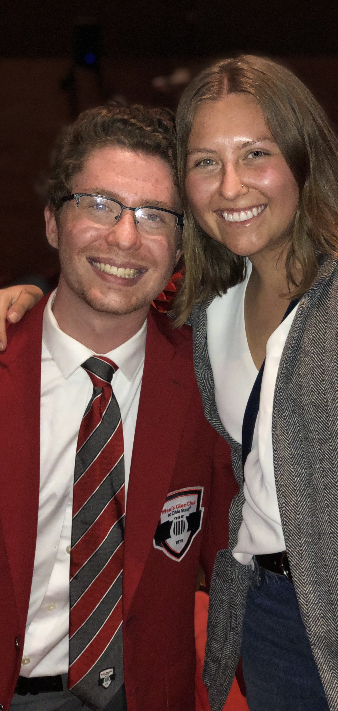
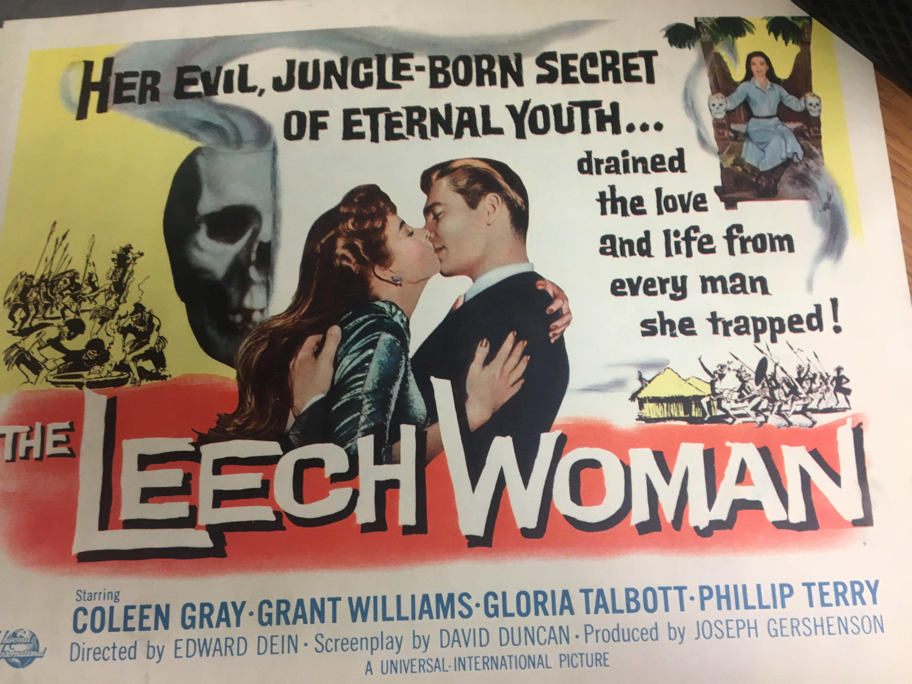
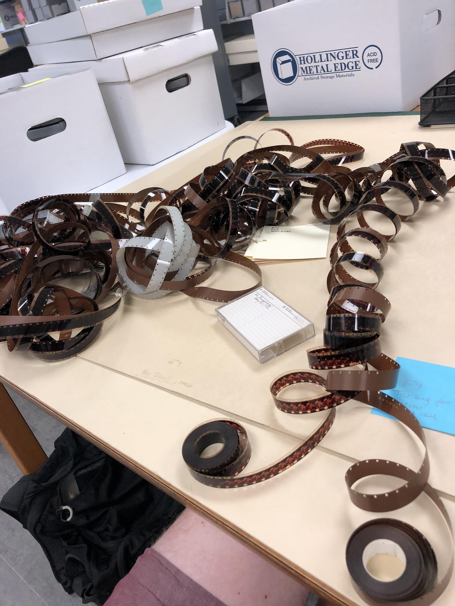
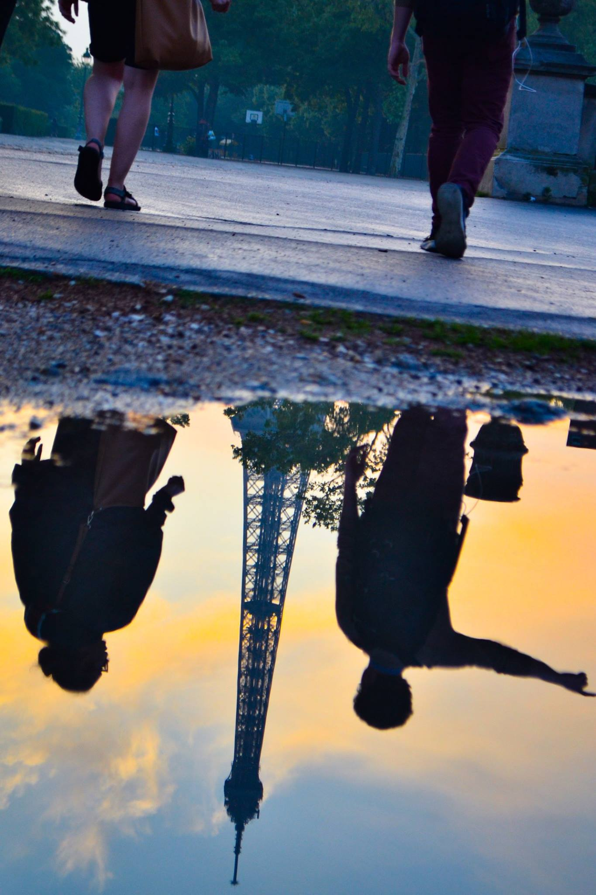
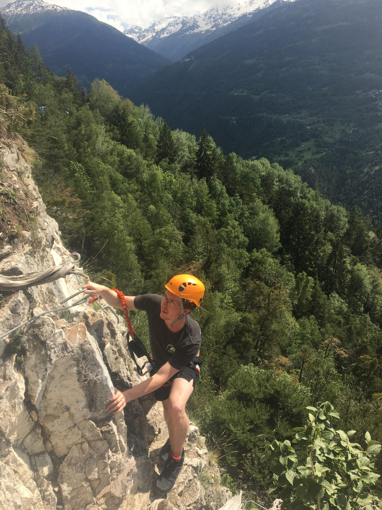
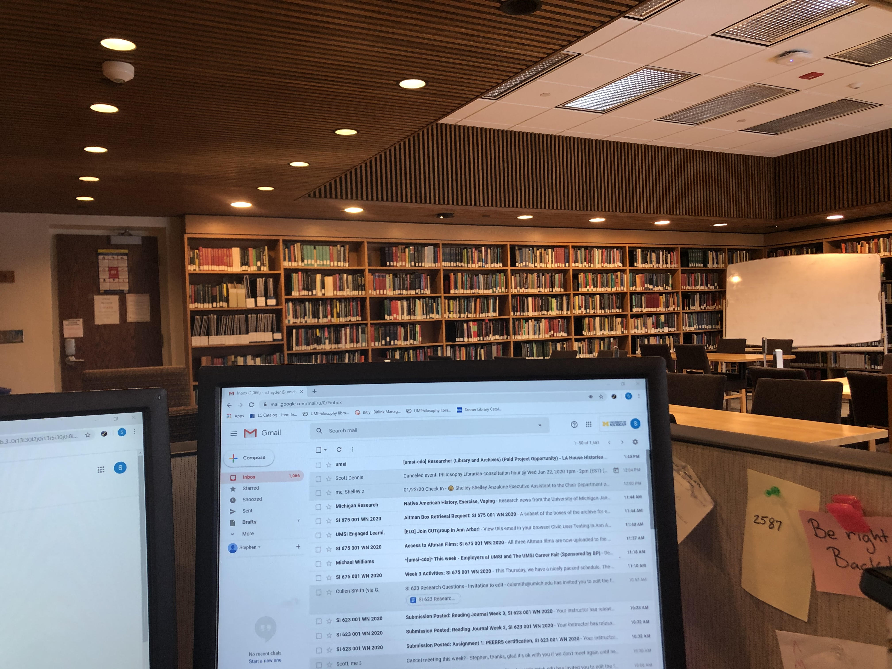
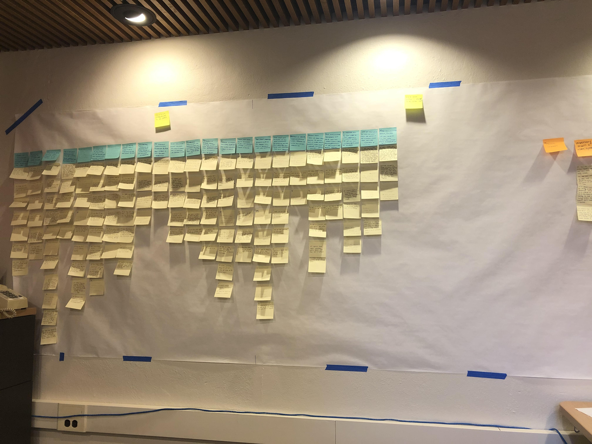
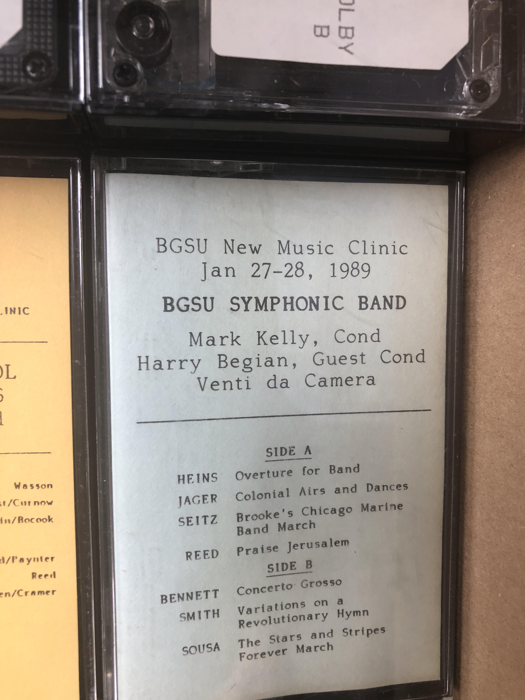
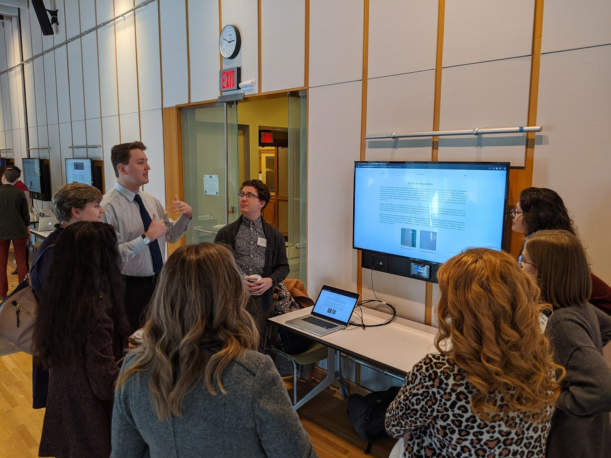

I earned my Bachelor of Arts in History in 2019 from The Ohio State University, and am on track to earn a Master of Science in Information from the University of Michigan School of Information in May 2021.
OSU Men's Glee club
For my final three years of undergrad I was a member of the Ohio State University Men's Glee Club. As an ensemble, we travelled largely around Ohio, though extending to Michigan, Indiana, and West Virginia to perform and work with high school students on their choral education. Averaging 80 members, I also spent time within the smaller communications commitee, responsible for organizing communication within the ensemble, as well as to the outer community, and to our alumni network. My final year in the club, I was able to undertake a project with University Archives to create a display case of MGC artifacts, as the OSUMGC is proud to be the oldest continually operating student organization at The Ohio State University, being founded in 1875.
Ohio State Special Collections Archival Description and Access
For all eight semesters of my undergraduate degree, and the final two summers, I was lucky to work as a student processing assistant, where I got to work under a team of incredible archivists learning about acquisitions, housing, metadata standards, description, EAD systems, and writing finding aids. I was able to work on over 100+ different collections in my four years, and under each specific function within our department.
 Ohio State Program in the Transnational History of WWII
Following my junior year of college I was privilleged to participate in Ohio State's WWII Study Abroad program where, after completing two spring semester classes, we spent a month travelling between the U.K., Normandy, Paris, Krakow, and Berlin. As it was up to us to arrange our travel in and out of Europe, many from our program went to Dublin, Ireland before the official program begin in London, and I personally travelled to Sierre, Switzerland Following the conclusion of our program in Berlin.
The program was structured such that from ~9 a.m. until ~ 2 p.m. we were at a site, such as The Imperial War Museum, Bletchley Park, Omaha Beach, Auschwitz/Birkenau, or the Bundestag, and then had the rest of the day to ourselves to explore whatever city we found ourselves. Along the way we were responsbile for publishing a series of travel blogs, where we interpreted the collective memory and presentation of public history from an array of perspectives, including as an American, or as a historian. Additionally, we conducted research during that prior spring semester, and then transformed that research paper into a site report where we presented at a relevant place. I personally presented my work on the establishment of the Vichy Government in the Les Invalides Plaza. Ultimately, the opportunity to dissect public history and its relationship with collective memory in the locations where the war was actually fought remains one of the most formative experiences I've had relating to my understanding of artifact preservation and presentation.
 Managing the Tanner Philosophy Library
Tanner Library Following my junior year of college I was privilleged to participate in Ohio State's WWII Study Abroad program where, after completing two spring semester classes, we spent a month travelling between the U.K., Normandy, Paris, Krakow, and Berlin. As it was up to us to arrange our travel in and out of Europe, many from our program went to Dublin, Ireland before the official program begin in London, and I personally travelled to Sierre, Switzerland Following the conclusion of our program in Berlin.
SI501 Consultation
SI501 + affinity wall Following my junior year of college I was privilleged to participate in Ohio State's WWII Study Abroad program where, after completing two spring semester classes, we spent a month travelling between the U.K., Normandy, Paris, Krakow, and Berlin. As it was up to us to arrange our travel in and out of Europe, many from our program went to Dublin, Ireland before the official program begin in London, and I personally travelled to Sierre, Switzerland Following the conclusion of our program in Berlin.
MSK Metadata Schema
666 MSK collection 1 \Following my junior year of college I was privilleged to participate in Ohio State's WWII Study Abroad program where, after completing two spring semester classes, we spent a month travelling between the U.K., Normandy, Paris, Krakow, and Berlin. As it was up to us to arrange our travel in and out of Europe, many from our program went to Dublin, Ireland before the official program begin in London, and I personally travelled to Sierre, Switzerland Following the conclusion of our program in Berlin.

Quasicon
quasicon 1 Following my junior year of college I was privilleged to participate in Ohio State's WWII Study Abroad program where, after completing two spring semester classes, we spent a month travelling between the U.K., Normandy, Paris, Krakow, and Berlin. As it was up to us to arrange our travel in and out of Europe, many from our program went to Dublin, Ireland before the official program begin in London, and I personally travelled to Sierre, Switzerland Following the conclusion of our program in Berlin.
